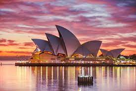
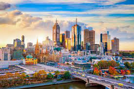
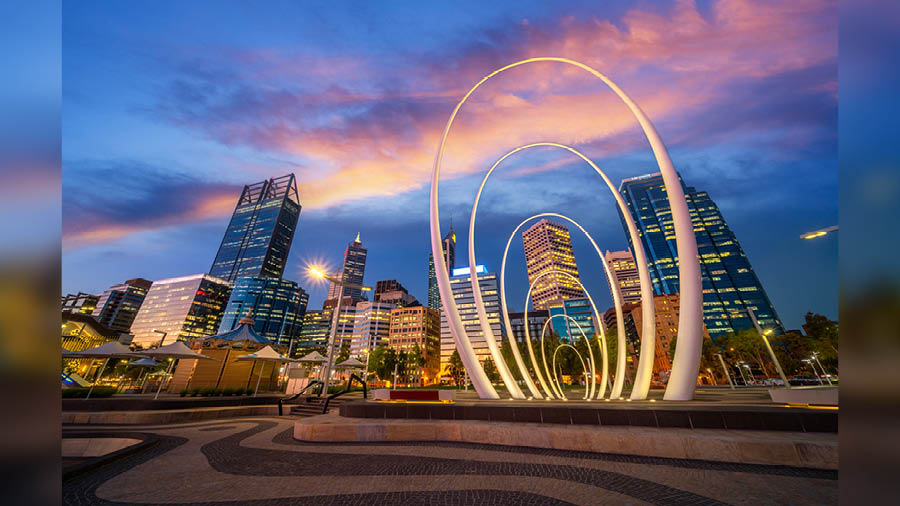

Australia
- Sydney
- Sydney is the capital city of the state of New South Wales, and the most populous city in Australia. Located on Australia's east coast, the metropolis surrounds Sydney Harbour and extends about 80 km (50 mi) from the Pacific Ocean in the east to the Blue Mountains in the west, and about 80 km (50 mi) from the Ku-ring-gai Chase National Park and the Hawkesbury River in the north and north-west, to the Royal National Park and Macarthur in the south and south-west.[5] Greater Sydney consists of 658 suburbs, spread across 33 local government areas.

Melbourne
Melbourne is the coastal capital of the southea
stern Australian state of Victoria. At the city's centre is the modern Federation Square development, with plazas, bars, and restaurants by the Yarra River. In the Southbank area, the Melbourne Arts Precinct is the site of Arts Centre Melbourne

Perth
Perth, capital of Western Australia, sits where the Swan River meets the southwest coast. Sandy beaches line its suburbs, and the huge, riverside Kings Park and Botanic Garden on Mount Eliza offer sweeping views of the city.

Sydney
- New South Wales
- Queensland
Melbourne
- Victoria
- South Australia
Perth
- Western Australia
- Tasmania
Source